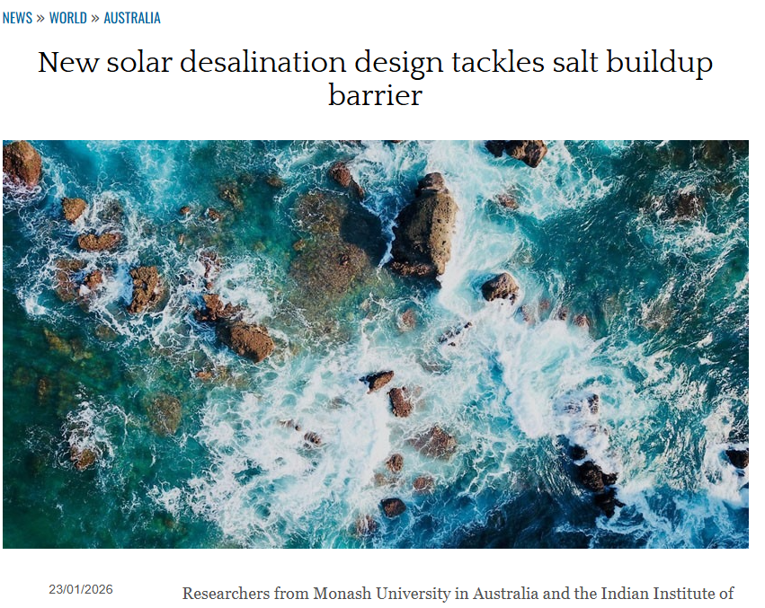
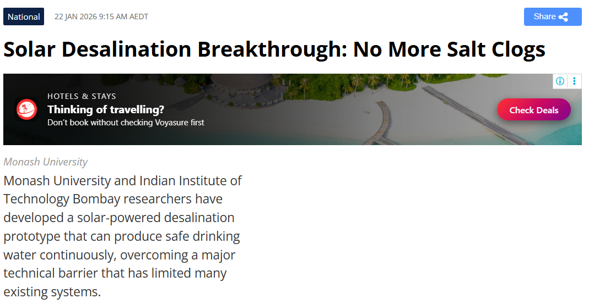
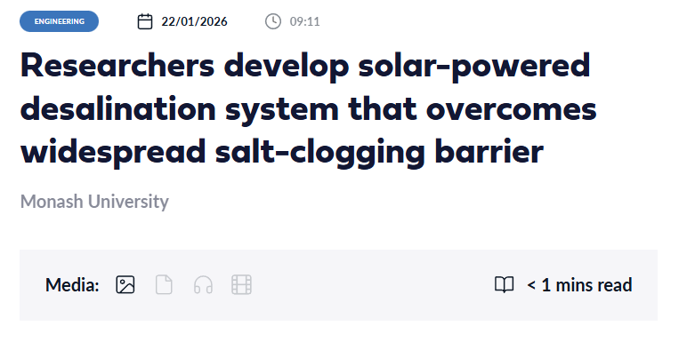

In Media

Australian Manufacturing
Researchers develop solar-powered desalination system to
produce continuous drinking water
Read article ↗


Medianet / Newshub
Researchers develop solar-powered desalination system that
overcomes widespread salt-clogging barrier
Read article ↗